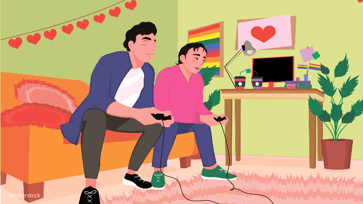
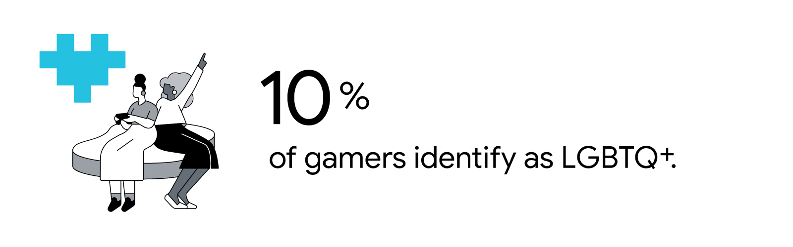
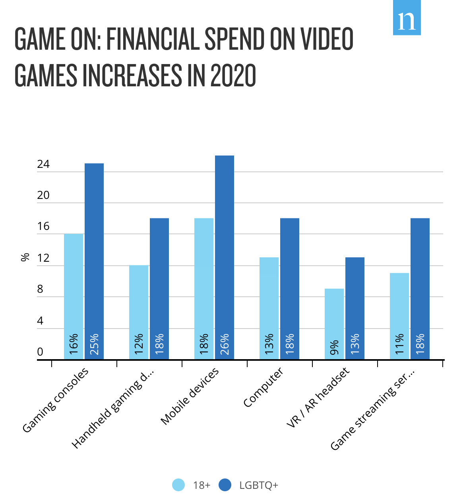
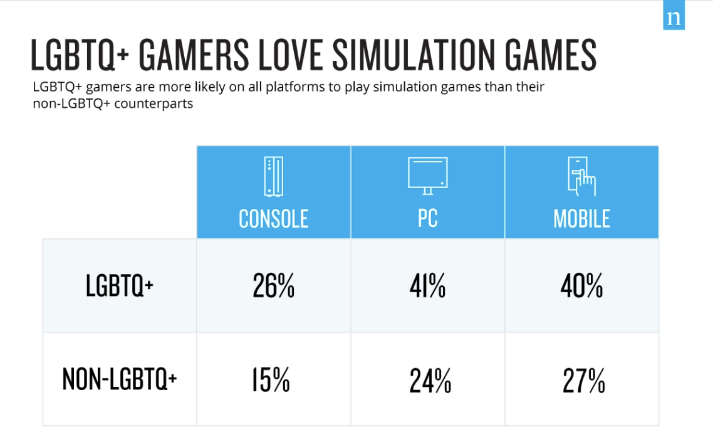
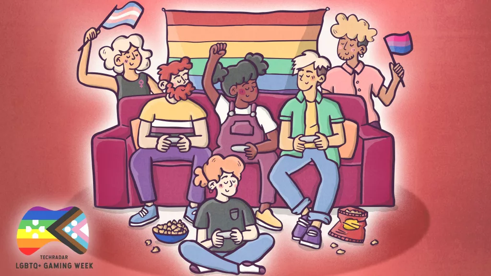
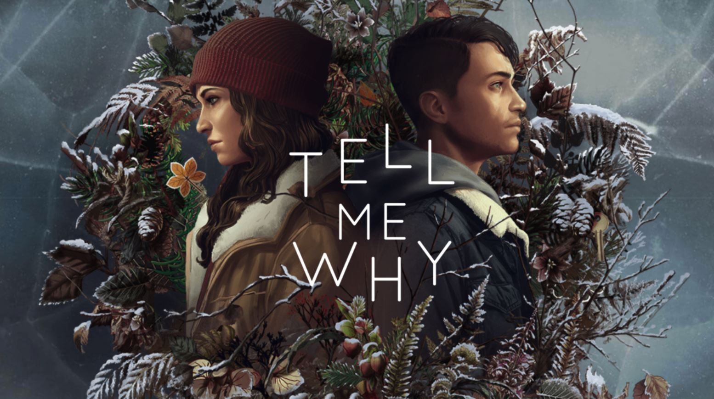

LGBTQIA+ Discrimination in the Gaming Community: How Inclusivity and Representation Seek to Bridge the Intersection
By Teryn Morgan
Image credit: Shutterstock
John Scalzi’s piece “Straight White Male: The Lowest Difficulty Setting There Is” uses gaming as a metaphor to explain how being a “straight white male” is similar to being on the lowest difficulty of a video game [1]. In contrast, he states a player who plays on “Gay Minority Female” mode is playing on the highest difficulty setting. Scalzi’s analogy alludes to the experience of marginalized players who have to defend their credibility as gamers before they’ve even started playing; thus, implicitly increasing game difficulty. However, this argument perpetuates the notion that cisgender (gender identity corresponds to birth sex) men are seen as the face of the gaming industry when this is not inherently true.
Image credit: Think with Google
In 2020, Nielson Games 360 Survey found 10% of all gamers over the age of 18 identified as LGBTQ+ and spent 8% more on video games per month than their non-LGBTQ+ counterparts, equating to an average of $13.14 versus $10.40 [2,3]. The following figure shows the distribution of spending of LGBTQ+ gamers compared to the general public. In all sectors of the gaming industry, from the devices used (consoles, headsets, computers) to streaming services, LGBTQ+ individuals are purchasing more gaming-centered products.
Image credit: Neilson Games 360 Survey 2020
The Nielson games survey also found LGBTQ+ gamers were more likely to play simulation games and have a gaming system (54% vs. 44%) across all platforms, as shown in the figure below [2]:
Image credit: Neilson Games 360 Survey 2020
Despite taking up a large percent of the market, LGBTQ+ members in the gaming community are disproportionately harassed while gaming. A study from the gaming website OnlineRoulette.org surveying 788 respondents between the ages of 18-70 found:
- 73% of all LGBTQ+ gamers reported experiencing harassment for their sexual orientation or gender identity.
- 33% stated their gaming identity matched their LGBTQ+ orientation. Of those who are openly out online, 88% reported being harassed while gaming.
- In particular, queer (umbrella term for the LGBTQ+ community) women and nonbinary gamers suffer severe harassment, with 61% of nonbinary gamers reporting sexist comments and insults to their intelligence.
- Such online harassment can turn violent, with 1 in 4 respondents stating they were threatened with sexual assault.
- Keeping in mind that many online gaming interactions are quasi-anonymous, LGBTQ+ players tend to limit their own exposure, with 41% avoiding certain games, 35% lying about their sexual identity, and 40% forgoing gaming online altogether[5].
On the other hand, online gaming can become a safe space for LGBTQ+ players, providing an avenue for users to come out. The same OnlineRoulette.org study found video games influenced 45% of respondents in discovering their sexuality through gaming. It was also found that 81% of LGBTQ+ gamers are more likely to buy a game if it includes a queer storyline [5]. Seeing that LGBTQ+ players are more likely to buy simulation games, catering these storylines with queer representation is an essential aspect to making the gaming community more inclusive to its LGBTQ+ base. Including queer characters in games helps normalize them for players who may not have much exposure to LGBTQ+ content in the outside world.
Image credit: TechRadar/R Healey Art
LGBTQ+ characters have been integrated into video games since the 1980s. Oftentimes, these representations are only assigned to supporting roles or depict derogatory stereotypes. For example, in Grand Theft Auto, a protagonist who is believed to be bisexual or pansexual is given aggressive personality traits and seen to engage in “non-normative sexual practices”[5]. This form of representation perpetuates stigmas that are harmful to the LGBTQ+ community and merely “checks the box” for marketing. Queer characters are most often seen as optional, romanceable non-player characters (NPCs) that are guarded behind player choices [6]. Player sexuality allows the player to choose their romance partners but puts the responsibility of queer representation solely on the player. It needs to be up to the game developer to create a diverse and inclusive gaming world rather than burdening the player with this labor.
Queer representation should be an intentional aspect of game design with NPCs and how the player converses with them. Giving an NPC a unique and thoughtful romantic history can enrich the game environment as the player interacts with the world. For instance, if the player is able to have a relationship in game, the developer should ensure other relationships outside of the player don’t always default to heterosexual pairings. Lead writer of Dragon Age Patrick Weekes states another reason queer characters aren’t more prevalent in NPC contexts is the time and effort it takes to create them [5]. Authenticity in queer story writing comes from someone who has lived that experience or inhabits the identity that is trying to be conveyed. In order to accurately portray LGBTQ+ stories, it is vital that they be told by LGBTQ+ storytellers. It is essential for studios to hire and put LGBTQ+ individuals in position of leadership who will be able to blend queer stories seamlessly in game design.
Image credit: XBOXERA Tell Me Why Review
This can be seen in games that are played from the point of view of an LGBTQ+ character when players are forced to experience new perspectives and empathize with the choices the character has to make. Tell Me Why follows Tyler, a transmasculine protagonist voiced and heavily influenced by trans actor August Black [7]. Game Director for Tell Me Why Florent Guillaume sees gaming as an opportunity to drive empathy towards people through sharing cultures or themes a player may never have been exposed to [5]. For example, in the game, Tyler is confronted by another player about his identity. This situation might be a common occurrence for a trans person, but might also offer a new perspective of an unknown experience for a player who isn't trans. The situation can take on a new meaning entirely as it’s happening to the player instead of seeing it happen as a third party.
This potential to create empathy is key, as sharing other people’s experiences is the first step to create understanding and care. It’s up to all developers to help create a safe, diverse and inclusive gaming world for everyone[5].
The harassment that LGBTQ+ gamers face in online communities cannot be ignored. Rules should be put in place within games to protect players from discrimination, harassment, and toxic behavior. This also means caring enough about the concerns of the LGBTQ+ community to continually receive feedback in efforts to actively reduce harassment. These digital spaces found through gaming can offer opportunities for LGBTQ+ gamers to form a tight-knit community they can discover themselves within. This occurs when developers create inclusive content and integrate queer representation in their storytelling. Intersectional diversity for gamers can elevate virtual worlds where there exists a player base that reflects society.
APA References
- Scalzi, J. (2012, May 15). Straight White Male: The Lowest Difficulty Setting There Is. Whatever.https://whatever.scalzi.com/2012/05/15/straight-white-male-the-lowest-difficulty-setting-there-is/
- LGBTQ+ Gamers are an Untapped Demographic.em> (2020, October 13). https://www.nielsen.com/us/en/insights/article/2020/lgbtq-gamers-are-an-untapped-demographic
- Henderson, T. (2020, August 7). 10 Percent of Gamers are LGBTQ+ Nielsen Study Shows. https://www.out.com/tech/2020/8/07/10-percent-gamers-are-lgbtq-nielsen-study-shows
- Exploring LGBTQ+ Gaming Experiences. (n.d.). Onlineroulette.Org. Retrieved April 10, 2022, from https://www.onlineroulette.org/features/exploring-lgbtq-gaming-experiences
- De Leon, P. (2020, August 3). LGBTQ+ Gamers on the Need for Proper Representation in Today’s Gaming World. HYPEBAE. https://hypebae.com/2020/8/lgbtq-representation-in-video-games-gaming-diversity-inclusivity-ea-the-sims-bioware-dragon-age-veronica-nikatine-ripley-interview
- Cole, A. & 2017. (2017, September 27). Avoiding the avoidable: Why “optional” queer content isn’t solving the the diversity problem (and how to fix this). Game Developer. https://www.gamedeveloper.com/design/avoiding-the-avoidable-why-optional-queer-content-isn-t-solving-the-diversity-problem-and-how-to-fix-this-
- Hyun Kim, M. (2020, September 11). “Tell Me Why” Is the First Major Video Game to Feature a Trans Main Character. Them. https://www.them.us/story/tell-me-why-video-game-trans-character